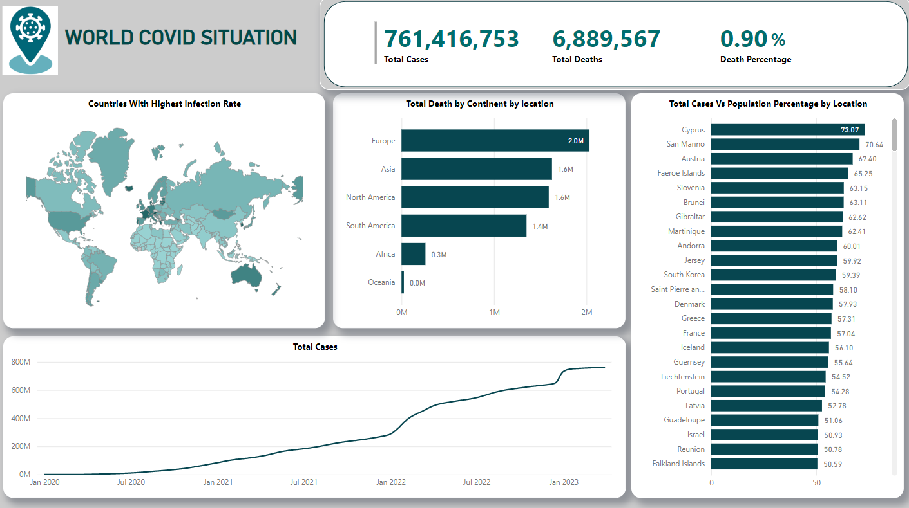

Involves utilizing SQL to arrange and process a COVID-19 dataset for meaningful analysis. The project involve tasks such as importing, cleaning, and structuring the dataset in a relational database using SQL commands. It also include querying and aggregating the data to generate actionable insights and visualizations, enabling effective decision-making or reporting related to the COVID-19 pandemic.


Involves writing SQL queries to retrieve, filter, aggregate, and join data from one or more tables in a database. It also includes data transformation, and data aggregation using SQL functions and operators using DVD Rental Dataset.

Involves utilizing SQL to clean and prepare data stored in relational databases. This include tasks such as creating new tables, altering existing tables, and updating tables and columns using SQL queries and statements. The project showcases the ability to design and implement database tables, modify table structures, and update data in the database using SQL commands, ensuring that the data is organized, structured, and cleaned for efficient analysis or reporting purposes.
Data cleaning involving transforming raw data into a structured format by removing duplicates, correcting errors, handling missing values, and formatting data, and visualization including a variety of chart types.

A visually engaging and informative dashboard that presents data from COVID-19 SQL Project using Power BI. It showcases my skills in data visualization, data analysis, and dashboard design using Power BI, demonstrating my ability to present complex data in a meaningful and accessible way.
Display insights on the most viewed YouTube channels, their categories, and the countries of origin. The dashboard presents data in a visually appealing and interactive manner, allowing for easy exploration and analysis of YouTube trends and statistics.
A fictional dataset by Refocus for the purpose of training and skill development. Focuses in visualizing necessary data to generate valuable insights for the improvement of the quality of the company's delivery system.